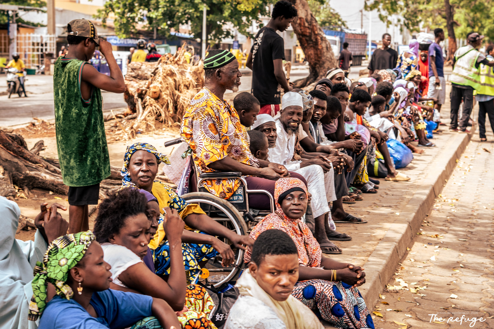
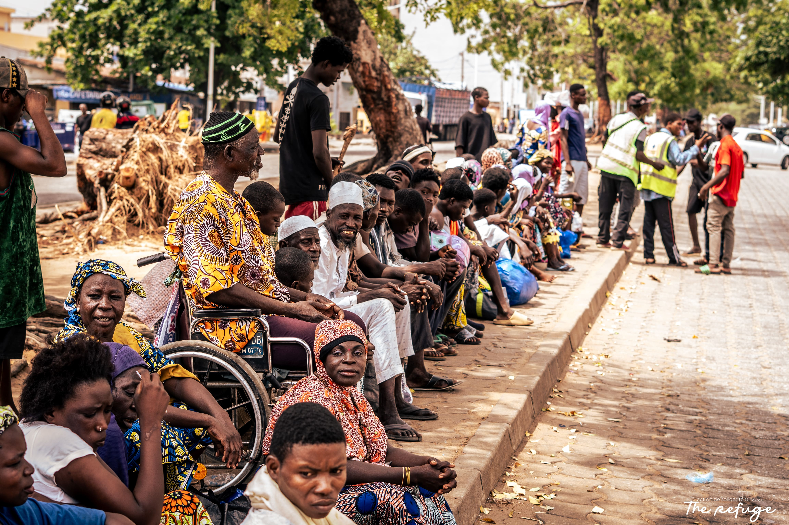
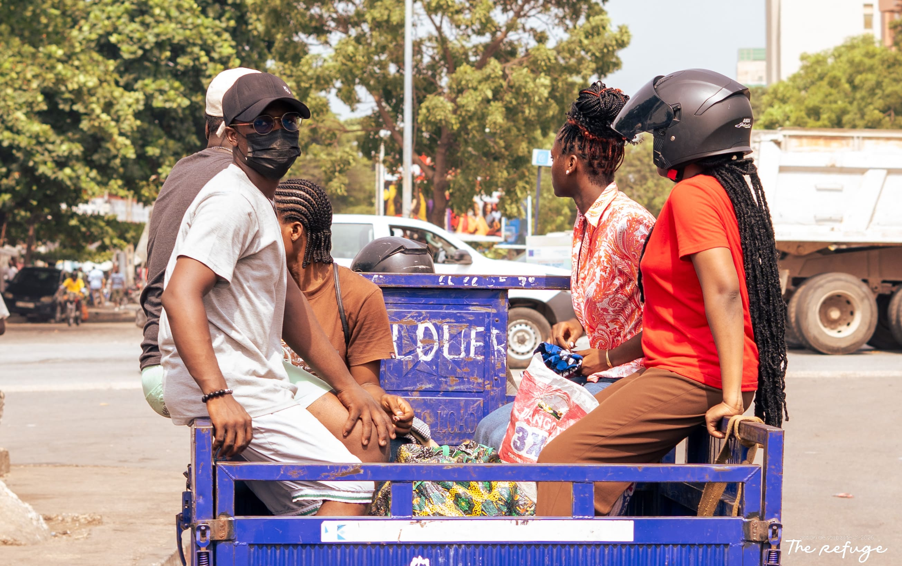
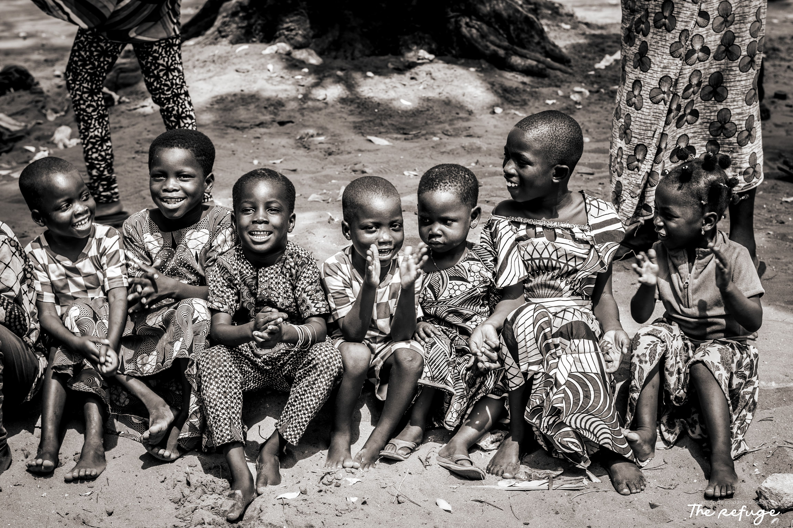

NOS PROGRAMMES
Répondre de manière ciblée aux souffrances pour initier un changement profond.



PROGRAMME 1
Chaque semaine, nos équipes se mobilisent pour préparer et distribuer des repas chauds, sains et équilibrés aux sans-abri de Cotonou. Plus qu'un simple repas physique, ces moments de distribution autour de tables improvisées dans la rue permettent de briser la glace, d'échanger et de redonner de la valeur à chacun.
Impact mensuel moyen : 350+ repas chauds distribués.

PROGRAMME 2
La faim la plus profonde est souvent celle de l'âme : l'isolement, le désespoir et les traumatismes de la rue détruisent de l'intérieur. Nous proposons des espaces d'écoute bienveillante, de conseil et d'intercession spirituelle. Notre équipe d'accompagnateurs et de bénévoles formés est présente pour prier avec ceux qui le demandent, sans jamais rien forcer, dans le pur respect de leur chemin.
Accompagnement spirituel : 80+ heures d'écoute active par mois.

PROGRAMME 3
L'apparence physique est le premier rempart de l'estime de soi. Vivre dans la rue abîme les corps et détruit les habits. Nous organisons régulièrement des collectes et des distributions de vêtements propres, solides et adaptés, ainsi que de trousses d'hygiène de base (savon, brosses à dents, serviettes). Nous facilitons également l'accès à des soins de premier secours.
Articles distribués : 150+ kits d'hygiène et vêtements par trimestre.

PROGRAMME 4
Le but ultime de The Refuge n'est pas d'entretenir la précarité, mais d'en sortir. Nous orientons et accompagnons nos bénéficiaires les plus stables vers des centres d'hébergement partenaires, des centres de désintoxication ou des petits programmes de formation professionnelle. Grâce à nos partenaires locaux, nous les aidons à retrouver un emploi ou à lancer une petite activité autonome.
Sorties de rue : 12 personnes réinsérées durablement cette année.
NOTRE CALENDRIER
Nos activités suivent un rythme régulier pour assurer une présence fiable auprès de nos bénéficiaires.
Préparation des repas à 16h, début de la maraude à 19h dans les quartiers centraux de Cotonou (Zongo, Jonquet, Tokpa).
Ouverture de notre local d'accueil de 14h à 18h : douches, soins de premier secours, distribution de kits de vêtements et coiffure.
Méditation biblique partagée à 9h, suivie d'ateliers de parole et de prière fraternelle pour ceux qui désirent se joindre à nous.